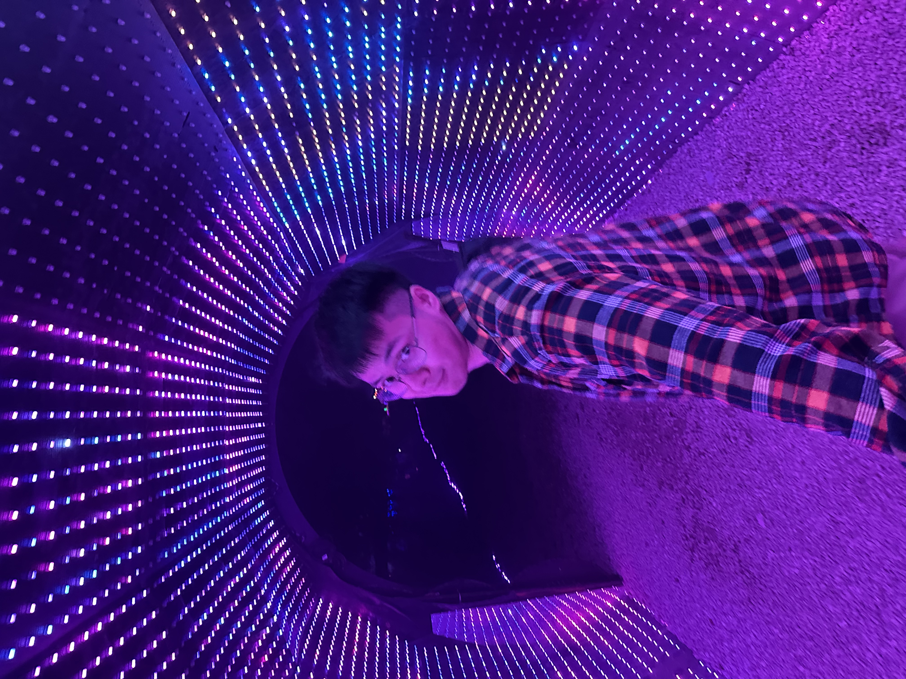

Stellar AI
AI Training Engineer
Feb 2026–May 2026
Turned real GitHub pull requests into training tasks for coding agents, with automated verifiers that checked their solutions.
Software engineer & curious human
I'm Ochi. I build the systems that keep things moving, and leave a little room for curiosity.
From Mongolia.
Based in Austin.
Banking. Life sciences. AI. And a few side quests.
Pick a bright, ringed leaf to discover a little story.
I'm Ochirtulga Namjim, but Ochi works. I'm a software engineer from Mongolia, now based in Austin, Texas. Since 2018, I've built software for banking, life sciences, and, more recently, AI coding agents.
I like working on the layer that makes everything else possible. The data that arrives on time. The service that stays up. The small decision that makes someone's day easier.
My name ends in tulga: the iron stand that holds a cauldron over the fire. That's the layer I build.

Different problems. A common thread: build something that holds.
AI Training Engineer
Feb 2026–May 2026
Turned real GitHub pull requests into training tasks for coding agents, with automated verifiers that checked their solutions.
Solutions Architect
Sep 2025–Jan 2026
Designed and built the public website and internal order and inventory tools for a family business in Mongolia.
Software Engineer | Data Engineer
Jul 2022–Mar 2025
Access management, asynchronous order processing, Kafka event workflows, and the pipelines connecting customer data.
Software Engineer | Database Administrator
Feb 2018–Oct 2021
Distributed platforms, database administration, data modeling, and the move from monolithic services to focused microservices.
Earlier: Graduate Teaching Assistant at Maharishi International University (2022), ERP Engineer at Infinite Solutions (2017), and Intern at ITZone (2017).
Two countries. Three degrees.
Still a lot left to learn.
American National University
Maharishi International University
Mongolian University of Science and Technology
Some things I do when I'm not writing code.
I love books enough to build an app around them. Bookworm started where a lot of my side projects do: something I wanted to use myself.
GTA, WoW, Dota, League, Counter-Strike, and hundreds of other worlds. Horror games, too. I just scream and react a lot.
This cartridge holds a little game of its own. Give it a play.
I'm a food lover. Finding something delicious is an adventure of its own.
New places, a change of scenery, and a little adventure. There's a lot of the world left to explore.
I love playing basketball. A good game is one of my favorite ways to step away from the screen.
Live music, good books, and the occasional rabbit hole about the markets.